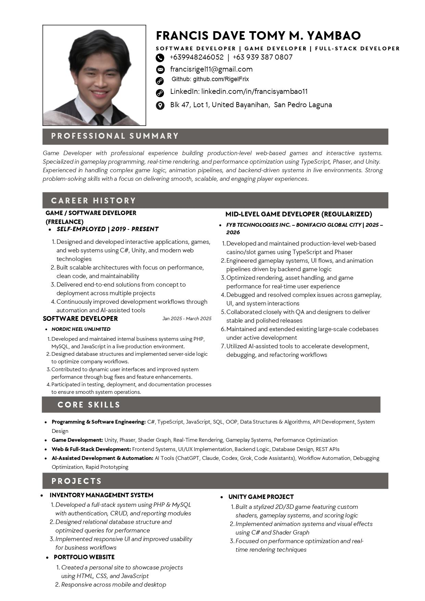

Francis Yambao, game developer: Live production games and finished Unity builds.
I'm Francis. I've built and maintained live web games with Phaser and TypeScript, and I've been building Unity games since 2019. Pick a game to watch it run.
DiJoker
- Status
- Engine
- Platform
- Footage
Choose a game
Left arrowRight arrow or AD to choose, Enter to open Swipe the screen to switch games Controller ready: d-pad to choose, A to open, B to back out
Player profile
I started building games in Unity in 2019 and never stopped. Gameplay work taught me feel, input, and the small details that make a game respond instead of just run.
Later I moved into web and backend work, then into a BGC-based game company, where I built and maintained live web games with Phaser and TypeScript alongside Cocos-based systems. Shipping to real players taught me release discipline: debugging under pressure, keeping UI state honest, and making performance hold up.
My full-stack side (PHP, MySQL, JavaScript) means I can follow a bug from the button all the way to the database.
- Role
- Mid-level game developer
- Building games since
- 2019
- Engines
- Unity, Phaser, Cocos
- Languages
- C#, TypeScript, JavaScript, PHP, SQL
- Based in
- Philippines
- Available
- Now, or on short notice
Move list
-
Gameplay systems
Unity since 2019: gameplay loops, physics feel, animation, and Shader Graph rendering experiments.
-
Production web games
Phaser and TypeScript in live releases, plus hands-on work with Cocos-based systems.
-
UI flow and game state
Menus, HUDs, tutorials, and real-time feedback that stay in step with what the game is doing.
-
Backend-connected logic
PHP, MySQL, and REST-style backend logic, so features that talk to a server behave in game.
-
Debugging and performance
Fixing production bugs inside unfamiliar codebases and keeping real-time apps smooth.
-
Team play
Working with QA, designers, and developers, with an AI-assisted workflow that I validate logic-first.
Loadout
- Unity
- C#
- Phaser
- TypeScript
- JavaScript
- Cocos
- Shader Graph
- PHP
- MySQL
- REST APIs
- Git
- VS Code
- Cursor
- Copilot
Career mode
-
Production game developer
Game company, BGC
Built and maintained gameplay systems, UI flows, animation behaviour, and backend-driven logic for live web games using TypeScript, Phaser, and Cocos-based systems.
-
Full-stack developer
Internal business systems
Built and improved systems in PHP, MySQL, and JavaScript, including an inventory management system: database design, backend logic, reporting, performance fixes, and production bug resolution.
-
Independent game developer
Since 2019
Unity games from first prototype to finished build: commissioned work, mobile games, a guided simulation for mobile and desktop, and ongoing R&D.
Looking for a game team with real engineering practice, where I can own gameplay and interactive systems and keep getting better at both.
Continue?
Hiring for a game team? I'm available now and can start right away or on short notice.
